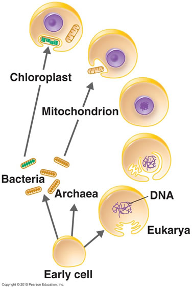

The sequential endosymbiotic origins of eukaryotes: Compared to bacteria and archaea, the typical eukaryotic cell is much more structurally complex.
While the prokaryotes have a rigid cell wall, the ancestral eukaryote appears to have been wall-less (the walls of plant cells appear to represent a adaptation, and are not homologous to prokaryotic cell walls).
Figure: A eukaryotic cell. Click the image to learn more
In addition to a nucleus (wherein the cell’s DNA is located, and which we will return to in the next section), there are cytoskeletal structures, including distinctive flagella (quite different from those found in prokaryotes), an active (motile) plasma membrane, capable of engulfing other cells, and multiple internal membrane systems. (A more complete description of cell structure is beyond the text).
In aerobic bacteria and cyanobacteria, the electron transport chains associated with ATP synthesis (through either photosynthesis or aerobic respiration) located within the plasma membrane (and in the case of cyanobacteria, internal membrane systems as well).
The same processes (aerobic respiration and photosynthesis) occur within eukaryotic cells. Animals have aerobic respiration, while plants have both).
However, these processes do not occur on the plasma membrane, but rather within distinct cytoplasmic organelles: mitochondria for aerobic respiration and chloroplasts for photosynthesis. All eukaryotic cells have mitochondria, plants (which are eukaryotic) have both mitochondria and chloroplasts.
An intriguing evolutionary question was, are these processes related, that is, are the processes of aerobic respiration and photosynthesis found in eukaryotes homologous to the processes found in bacteria and cyanobacteria, or did they originate independently.
The path to understanding that homologous nature of these processes began with studies of cell structure.
In 1925 Ivan Wallin (1883-1969) proposed that the mitochondria of eukaryotic cells were derived from bacteria.
The endosymbiotic origins of eukaryotes (and mitochondria and chloroplasts) fell out of favor, in large part because the molecular methods needed to unambiguously resolve these questions were not available.
A breakthrough came with the endosymbiotic hypothesis put forward by Lynn Margulis (1938-2011).
Based on large amounts of molecular data and ultrastructural data, she concluded that all eukaryotes are derived from an ancestor that engulfed an aerobic α-proteobacteria-like bacterium.
These bacteria survived within the eukaryotic cell, becoming an endosymbiont, which over time became mitochondria. All eukaryotes (including us) are descended from the mitochondria-containing eukaryote. This event is thought to have occurred around 2 billion years ago.
That said the origin and nature of the engulfing cell remains unclear, it may have arisen from, or was derived from an archaeal ancestor.
The next step in eukaryotic evolution involved a second endosymbiotic event in which a cyanobacteria-like bacterium formed an endosymbiotic relationship with a mitochondria-containing eukaryote.
](http://users.rcn.com/jkimball.ma.ultranet/BiologyPages/E/Endosymbiosis.html)
Figure: Eukaryotic origins. Click the image to learn more
This lineage gave rise to the glaucophytes, the red and the green algae. The green algae are the ancestors of all plants
Figure: Primary endosymbiosis
The presence of chloroplasts and photosynthesis in other protist linages (e.g., Euglenids, brown algae and golden algae) is due to a secondary endosymbiotic event. The ancestor of these lineages engulfed an ancient glaucophyte.
Figure: Secondary endosymbiosis
As we look through modern organisms there a number of examples where we find evidence for one organism becoming inextricably linked to another through endosymbiotic processes.
There are also examples of close couplings between organisms that are more akin to parasitism (rather then mutually beneficial symbiosis [link].
Questions to answer
Questions to ponder